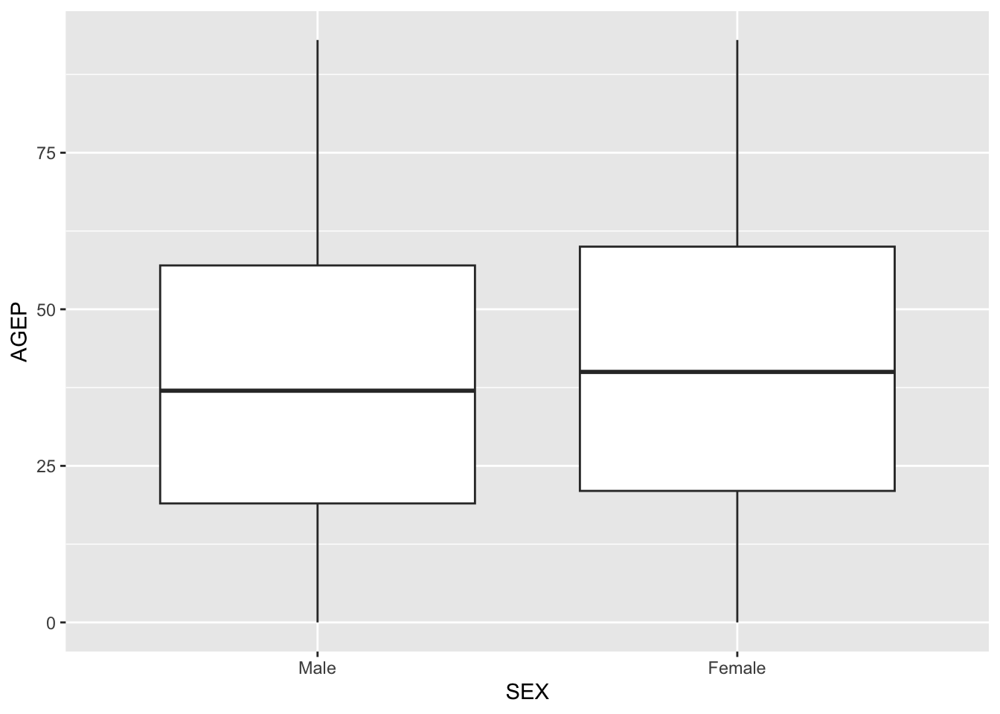
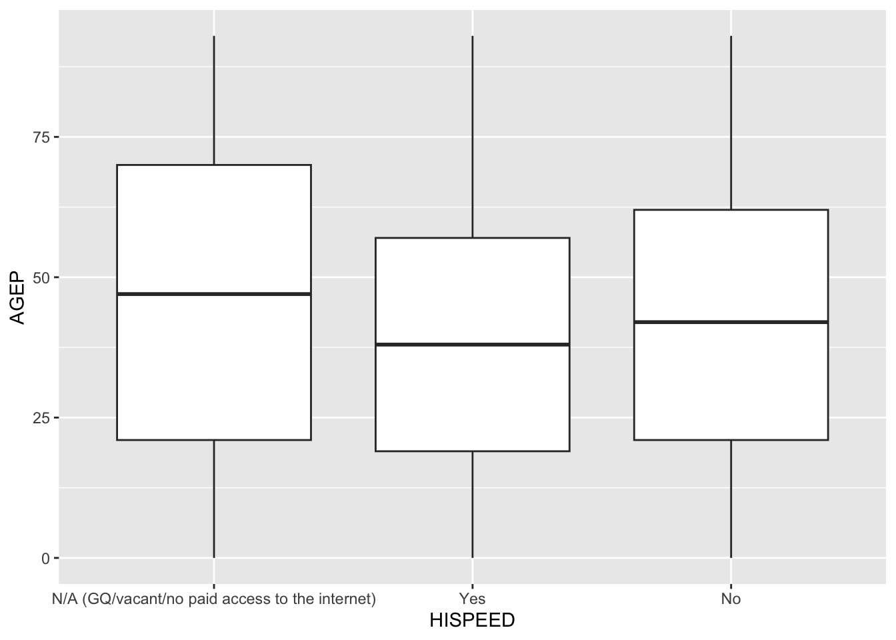

For this project, we are working with the Census Public Use Microdata Sample (PUMS) API. The PUMS data consists of a sample of individual records from people and housing units across America. Our goal is to write a function to query this API to return a nicely formatted tibble, and then write a summary function to summarize and visualize the data. After creating and testing our functions, we will use them to investigate the relationship between household internet speed and age in North Carolina in 2022. This project demonstrates how functions can streamline API querying and data analysis.
Data Processing
In this section, we process data from the Census PUMS API. The goal is to build a set of functions that return clean tibbles that are easy to work with in R. We explore the raw API response and create helper functions to clean and structure the data. Then, we modify the functions so a user can customize which variables and years are returned.
library(httr)library(jsonlite)library(dplyr)
Attaching package: 'dplyr'
The following objects are masked from 'package:stats':
filter, lag
The following objects are masked from 'package:base':
intersect, setdiff, setequal, union
── Conflicts ────────────────────────────────────────── tidyverse_conflicts() ──
✖ dplyr::filter() masks stats::filter()
✖ purrr::flatten() masks jsonlite::flatten()
✖ dplyr::lag() masks stats::lag()
ℹ Use the conflicted package (<http://conflicted.r-lib.org/>) to force all conflicts to become errors
library(lubridate)library(ggplot2)
The following code chunk reads in the data and checks the structure so we can figure out how to turn it into a tibble.
The raw output from httr::GET() is not immediately usable because it comes as JSON text with column names embedded in the first row. To fix this, we wrote a helper function called clean_census(). This function extracts the column names, removes the header row, and returns the result as a tibble. Because it is written generally, it can be reused for any Census API response.
This code chunk creates some look up tables that will be useful for turning numeric variables into time values later in the pums_query() function.
# Query the API for a table describing the JWAP and JWDP categorical variables and then create lookup tables to turn numeric variables into time variables laterjwap_url <-"https://api.census.gov/data/2022/acs/acs1/pums/variables/JWAP.json"jwap_blob <-fromJSON(jwap_url)jwap_lookup <- jwap_blob$values$itemnames(jwap_lookup) <-as.numeric(names(jwap_lookup))jwdp_url <-"https://api.census.gov/data/2022/acs/acs1/pums/variables/JWDP.json"jwdp_blob <-fromJSON(jwdp_url)jwdp_lookup <- jwdp_blob$values$itemnames(jwdp_lookup) <-as.numeric(names(jwdp_lookup))
This code chunk creates some lists that will be useful for turning categorical variables into factors with appropriate levels later in the pums_query() function.
# Save categorical variables as lists to turn into a factor with appropriate levels laterFER_labels <-c("0"="N/A (less than 15 years/greater than 50 years/ male)", "1"="Yes", "2"="No")HHL_labels <-c("0"="N/A (GQ/vacant)", "1"="English Only", "2"="Spanish", "3"="Other Indo-European languages", "4"="Asian and Pacific Island languages", "5"="Other Language")HISPEED_labels <-c("0"="N/A (GQ/vacant/no paid access to the internet)", "1"="Yes", "2"="No")JWTRNS_labels <-c("0"="N/A (not a worker-not in the labor force, including persons under 16 years; unemployed; employed, with a job but not at work; Armed Forces, with a job but not at work)", "1"="Car, truck, or van", "2"="Bus", "3"="Subway or elevated rail", "4"="Long-distance train or commuter rail", "5"="Light rail, streetcar, or trolley", "6"="Ferryboat", "7"="Taxicab", "8"="Motorcycle", "9"="Bicycle", "10"="Walked", "11"="Worked from home", "12"="Other method")SCH_labels <-c("0"="N/A (less than 3 years old)", "1"="No, has not attended in the last 3 months", "2"="Yes, public school or public college", "3"="Yes, private school or college or home school")SCHL_labels <-c("0"="N/A (less than 3 years old)", "1"="No schooling completed", "2"="Nursery school, preschool", "3"="Kindergarten", "4"="Grade 1", "5"="Grade 2", "6"="Grade 3", "7"="Grade 4", "8"="Grade 5", "9"="Grade 6", "10"="Grade 7", "11"="Grade 8", "12"="Grade 9", "13"="Grade 10", "14"="Grade 11", "15"="12th grade - no diploma", "16"="Regular high school diploma", "17"="GED or alternative credential", "18"="Some college, but less than 1 year", "19"="1 or more years of college credit, no degree", "20"="Associate's degree", "21"="Bachelor's degree", "22"="Master's degree", "23"="Professional degree beyond a bachelor's degree", "24"="Doctorate degree")SEX_labels <-c("1"="Male", "2"="Female")
Next, we need a function that can query the API while allowing the user to specify which data they would like to display. To do this, we wrote a function, pums_query() that allows users to specify the survey year, numeric variables, categorical variables, geography level, and optional data subsetting. Pums_query() performs type conversions which are necessary for some numeric and categorical variables. We also used checks to ensure that the inputs are valid, which helps to avoid API errors.
# Query the API; we used state code 37 because 03 was invalidpums_query <-function(year =2022, numeric_variables =c("AGEP", "PWGTP"), categorical_variables =c("SEX"), geography ="state", geography_code ="37"){# Argument error checkingif(!(year %in%2010:2022)){stop("Year is not valid") }if(!("PWGTP"%in% numeric_variables)){stop("PWGTP must be in numeric_variables") }if(length(numeric_variables) <2){stop("Another numeric variable must be requested") }if(length(categorical_variables) <1){stop("A categorical variable must be requested") }if(!(tolower(geography) %in%c("all", "region", "division", "state"))){stop("Must specify geography level") }if(geography =="state"&& (!(geography_code %in%sprintf("%02d", 1:72)) && geography_code !="*")){stop("Geography_code for state must be 2 digit code between 01 and 72 or = * for all states") }if(geography =="region"&& (!(geography_code %in%sprintf("%01d", 1:4)) && geography_code !="*")){stop("Geography_code for region must be code between 1 and 4 or = * for all regions") }if(geography =="division"&& (!(geography_code %in%sprintf("%01d", 1:9)) && geography_code !="*")){stop("Geography_code for division must be code between 1 and 9 or = * for all divisions") }# Combine variables into a comma separated string variables <-paste(c(numeric_variables, categorical_variables), collapse =",")# Create the geography part of the query, allowing for subsetting. This code allows for user to call "all" geography by not including geography key from the URL if "all" is called. geography_key <-""if (geography !="all"){ geography_key <-paste0("&for=", geography,":", geography_code) }# Build the URL from the provided arguments build_url <-paste0("https://api.census.gov/data/", year, "/acs/acs1/pums?get=", variables, geography_key)# Send http GET request url_result <- httr::GET(build_url)if(status_code(url_result) !=200){stop("Request failed with status: ", status_code(url_result)) }# Use helper function to turn url_result into a tibble census_tibble <-clean_query_result(url_result)# Turn numeric variables into numeric values numeric_options <-c("AGEP", "GASP", "GRPIP", "PWGTP", "JWMNP") numeric_values <-intersect(numeric_options, numeric_variables) census_tibble[numeric_values] <-lapply(census_tibble[numeric_values], as.numeric)# Helper function which converts a given time range string into a time string which is the midpoint of the range time_convert <-function(time_range){if (startsWith(time_range, "N")) return(NA) times <-strsplit(time_range, " to ")[[1]] start_time <-period_to_seconds(hm(times[1])) end_time <-period_to_seconds(hm(times[2]))if (end_time < start_time) end_time <- end_time +24*3600 seconds <- (start_time + end_time) /2 time <-as.POSIXct(seconds, origin ="1970-01-01", tz ="UTC")return(format(time, "%H:%M:%S %p")) }# Convert all values in JWAP and JWDP into timeif ("JWAP"%in%names(census_tibble)){ census_tibble[["JWAP"]] <-sapply(census_tibble[["JWAP"]], function(x) time_convert(jwap_lookup[[x]])) }if ("JWDP"%in%names(census_tibble)){ census_tibble[["JWDP"]] <-sapply(census_tibble[["JWDP"]], function(x) time_convert(jwdp_lookup[[x]])) }# Convert categorical variable into a factor with appropriate levels if ("FER"%in%names(census_tibble)){ census_tibble[["FER"]] <-factor(census_tibble[["FER"]], levels =names(FER_labels), labels = FER_labels) }if ("HHL"%in%names(census_tibble)){ census_tibble[["HHL"]] <-factor(census_tibble[["HHL"]], levels =names(HHL_labels), labels = HHL_labels) }if ("HISPEED"%in%names(census_tibble)){ census_tibble[["HISPEED"]] <-factor(census_tibble[["HISPEED"]], levels =names(HISPEED_labels), labels = HISPEED_labels) }if ("JWTRNS"%in%names(census_tibble)){ census_tibble[["JWTRNS"]] <-factor(census_tibble[["JWTRNS"]], levels =names(JWTRNS_labels), labels = JWTRNS_labels) }if ("SCH"%in%names(census_tibble)){ census_tibble[["SCH"]] <-factor(census_tibble[["SCH"]], levels =names(SCH_labels), labels = SCH_labels) }if ("SCHL"%in%names(census_tibble)){ census_tibble[["SCHL"]] <-factor(census_tibble[["SCHL"]], levels =names(SCHL_labels), labels = SCHL_labels) }if ("SEX"%in%names(census_tibble)){ census_tibble[["SEX"]] <-factor(census_tibble[["SEX"]], levels =names(SEX_labels), labels = SEX_labels) }# Add census class to census_tibbleclass(census_tibble) <-c("census", class(census_tibble))return(census_tibble)}
Now, we can test our function by requesting data for a single year with numeric variables, categorical variables, and geography.
The last function was able to return a tibble for a single year of data, so now we need to expand on this to call data from multiple years. Pums_multi_year() loops over each requested year, calls pums_query() for each, and combines the results into a single tibble with a year column. This allows for comparison across years.
# Create a function that calls the single year function as many times as needed and combines into one final tibblepums_multi_year <-function(years, numeric_variables =c("AGEP", "PWGTP"), categorical_variables =c("SEX"), geography ="state", geography_code ="37"){ years <-as.integer(years) all_data <-list()# Call single year query function once for each yearfor(yr in years){ test_tibble <-pums_query(year = yr, numeric_variables = numeric_variables, categorical_variables = categorical_variables, geography = geography, geography_code = geography_code )# Add year column test_tibble$year <- yr all_data[[as.character(yr)]] <- test_tibble }# Combines data from given years into one final tibble combined_data <-dplyr::bind_rows(all_data)return(combined_data)}
# A tibble: 6 × 15
AGEP PWGTP GASP GRPIP JWAP JWDP JWMNP SEX FER HHL HISPEED SCH
<dbl> <dbl> <dbl> <dbl> <chr> <chr> <dbl> <fct> <fct> <fct> <fct> <fct>
1 37 11 3 0 <NA> <NA> 0 Male N/A (les… N/A … N/A (G… No, …
2 90 21 3 0 <NA> <NA> 0 Female N/A (les… N/A … N/A (G… No, …
3 49 4 3 0 <NA> <NA> 0 Male N/A (les… N/A … N/A (G… No, …
4 20 74 3 0 <NA> <NA> 0 Male N/A (les… N/A … N/A (G… Yes,…
5 46 3 3 0 <NA> <NA> 0 Male N/A (les… N/A … N/A (G… No, …
6 24 58 3 0 <NA> <NA> 0 Male N/A (les… N/A … N/A (G… No, …
# ℹ 3 more variables: SCHL <fct>, state <chr>, year <int>
At this point, we have developed a set of functions that can query the API, return tibbles, and combine data across years. In the next section we will build generic summarizing and plotting functions to explore the data in more detail.
Writing a Generic Function for Summarizing
Here we write a general function for summarizing. This function takes in three arguments: the tibble with class census, the numeric variable(s) to summarize, and the categorical variable(s) to summarize. By default, this function summarizes all numeric variables (other than PWGTP) and all categorical variables in the tibble. However, the user may also specify the variables they’d like to summarize. For numerical variables, the function will give the sample mean and standard deviation, and for categorical variables the function returns the counts. Here we also write a general function for plotting, where the user can specify one categorical variable and one numeric variable for plotting purposes.
# Check structure of tibblestr(sample_data)
census [109,230 × 15] (S3: census/tbl_df/tbl/data.frame)
$ AGEP : num [1:109230] 80 60 18 18 87 18 39 40 21 19 ...
$ PWGTP : num [1:109230] 45 7 64 56 50 56 36 38 38 8 ...
$ GASP : num [1:109230] 3 3 3 3 3 3 3 3 3 3 ...
$ GRPIP : num [1:109230] 0 0 0 0 0 0 0 0 0 0 ...
$ JWAP : Named chr [1:109230] NA NA "08:07:00 AM" NA ...
..- attr(*, "names")= chr [1:109230] "0" "0" "95" "0" ...
$ JWDP : Named chr [1:109230] NA NA "08:02:00 AM" NA ...
..- attr(*, "names")= chr [1:109230] "0" "0" "55" "0" ...
$ JWMNP : num [1:109230] 0 0 5 0 0 0 0 0 5 0 ...
$ SEX : Factor w/ 2 levels "Male","Female": 1 1 1 1 2 1 1 1 1 2 ...
$ FER : Factor w/ 3 levels "N/A (less than 15 years/greater than 50 years/ male)",..: 1 1 1 1 1 1 1 1 1 3 ...
$ HHL : Factor w/ 6 levels "N/A (GQ/vacant)",..: 1 1 1 1 1 1 1 1 1 1 ...
$ HISPEED: Factor w/ 3 levels "N/A (GQ/vacant/no paid access to the internet)",..: 1 1 1 1 1 1 1 1 1 1 ...
$ JWTRNS : Factor w/ 13 levels "N/A (not a worker-not in the labor force, including persons under 16 years; unemployed; employed, with a job bu"| __truncated__,..: 1 1 11 1 1 1 1 1 2 12 ...
$ SCH : Factor w/ 4 levels "N/A (less than 3 years old)",..: 2 2 2 3 2 3 2 2 2 4 ...
$ SCHL : Factor w/ 25 levels "N/A (less than 3 years old)",..: 11 19 17 19 17 19 17 16 17 21 ...
$ state : chr [1:109230] "37" "37" "37" "37" ...
# Function takes in tibble, numeric variables, categorical variablessummary_census <-function(census, numeric_var=NULL, cat_var=NULL){# Naming all possible categorical variablescat_vars <-c("SEX", "FER", "HHL", "HISPEED", "SCH", "SCHL")# Naming all possible categorical variables for this function all_cat_vars<-intersect(cat_vars, names(census))# Naming all possible numerical variables for the funcitonnum_vars <-c("AGEP", "PWGTP", "GASP", "GRPIP", "JWMNP")# Naming all possible numerica variables for this function all_num_vars<-intersect(num_vars, names(census))# Assigning weight to the column PWGTP in the data weight <- census$PWGTP# This first if() will give back everything by default if no numeric or categorical variables are enteredif (is.null(numeric_var) &is.null(cat_var)) { numeric_cols <-names(census)[sapply(census, is.numeric)]summary <- census |>reframe(# Sample meanacross(all_of(all_num_vars[all_num_vars !="PWGTP"]),function(x) sum(x * weight, na.rm =TRUE) /sum(weight, na.rm =TRUE),.names ="{.col}_sample_mean" ),# Sample standard deviationacross(all_of(all_num_vars[all_num_vars !="PWGTP"]),function(x) sqrt(sum((x)^2* weight, na.rm =TRUE) /sum(weight, na.rm =TRUE) - (sum(x * weight, na.rm =TRUE) /sum(weight, na.rm =TRUE))^2),.names ="{.col}_sample_sd" ) )# Here we count the categorical variables cat_counts <- census |>as.data.frame() |>select(all_cat_vars, PWGTP) |>pivot_longer(cols = all_cat_vars,names_to ="variable",values_to ="value" ) |>group_by(variable, value) |>summarise(weighted_count =sum(PWGTP), .groups ="drop")# Here we return the numerical and categorical summariesreturn(list(Numeric_Summary = summary,Categorical_Counts = cat_counts))# This handles if the user does not submit any numeric variables, only categorical. It will provide the counts for the categorical variables they provided } elseif (is.null(numeric_var)) { cat_counts <- census |>select(all_cat_vars, PWGTP) |>pivot_longer(cols =all_of(cat_var),names_to ="variable",values_to ="value" ) |>group_by(variable, value) |>summarise(weighted_count =sum(PWGTP), .groups ="drop")return(Categorical_Counts = cat_counts)# This handles if the user does not submit any categorical variables, only numerical It will provide the summaries for the numerical variables they provided } elseif(is.null(cat_var)) {# Now we need to find the sample mean and standard deviation for the numerical variables they provided summary <- census |>reframe(# Sample meanacross(all_of(numeric_var),function(x) sum(x * weight /sum(weight)),.names ="{.col}_sample_mean" ),# Sample standard deviationacross(all_of(numeric_var),function(x) sqrt(sum(x^2* weight) /sum(weight) - (sum(x * weight /sum(weight)))^2),.names ="{.col}_sample_sd" ) )return(list(Numeric_Summary = summary))# This handles if the user enters categorical and numeric variables }else{ cat_counts <- census |>select(all_cat_vars, PWGTP) |>pivot_longer(cols =all_of(cat_var),names_to ="variable",values_to ="value" ) |>group_by(variable, value) |>summarise(weighted_count =sum(PWGTP), .groups ="drop")# Now we need to find the sample mean and standard deviation for the numerical variables they provided summary <- census |>as.data.frame()|>reframe(# Sample meanacross(all_of(all_num_vars[all_num_vars !="PWGTP"]),function(x) sum(x * weight /sum(weight)),.names ="{.col}_sample_mean" ),# Sample standard deviationacross(all_of(all_num_vars[all_num_vars !="PWGTP"]),function(x) sqrt(sum(x^2* weight) /sum(weight) - (sum(x * weight /sum(weight)))^2),.names ="{.col}_sample_sd" ) )return(list(Numeric_Summary = summary,Categorical_Counts = cat_counts)) }} # Test of just entering tibblesummary_census(sample_data)
Warning: Using an external vector in selections was deprecated in tidyselect 1.1.0.
ℹ Please use `all_of()` or `any_of()` instead.
# Was:
data %>% select(all_cat_vars)
# Now:
data %>% select(all_of(all_cat_vars))
See <https://tidyselect.r-lib.org/reference/faq-external-vector.html>.
$Numeric_Summary
# A tibble: 1 × 8
AGEP_sample_mean GASP_sample_mean GRPIP_sample_mean JWMNP_sample_mean
<dbl> <dbl> <dbl> <dbl>
1 39.6 49.5 9.64 10.0
# ℹ 4 more variables: AGEP_sample_sd <dbl>, GASP_sample_sd <dbl>,
# GRPIP_sample_sd <dbl>, JWMNP_sample_sd <dbl>
$Categorical_Counts
# A tibble: 43 × 3
variable value weighted_count
<chr> <fct> <dbl>
1 FER N/A (less than 15 years/greater than 50 years/ male) 8179426
2 FER Yes 127864
3 FER No 2391683
4 HHL N/A (GQ/vacant) 281244
5 HHL English Only 8636010
6 HHL Spanish 1075744
7 HHL Other Indo-European languages 326612
8 HHL Asian and Pacific Island languages 260114
9 HHL Other Language 119249
10 HISPEED Yes 8316849
# ℹ 33 more rows
# Test of entering tibble with numeric variablesummary_census(sample_data, numeric_var ="AGEP")
# Test of entering tibble with more than one categorical variable and more than one numeric variablesummary_census(sample_data, numeric_var =c("GRPIP", "JWMNP"), cat_var =c("HHL", "HISPEED"))
$Numeric_Summary
AGEP_sample_mean GASP_sample_mean GRPIP_sample_mean JWMNP_sample_mean
1 39.63556 49.52083 9.638434 10.01047
AGEP_sample_sd GASP_sample_sd GRPIP_sample_sd JWMNP_sample_sd
1 23.18036 127.0942 20.87654 18.07373
$Categorical_Counts
# A tibble: 9 × 3
variable value weighted_count
<chr> <fct> <dbl>
1 HHL N/A (GQ/vacant) 281244
2 HHL English Only 8636010
3 HHL Spanish 1075744
4 HHL Other Indo-European languages 326612
5 HHL Asian and Pacific Island languages 260114
6 HHL Other Language 119249
7 HISPEED N/A (GQ/vacant/no paid access to the internet) 1009892
8 HISPEED Yes 8316849
9 HISPEED No 1372232
Plotting
Here we write a general function for plotting, where the user can specify one categorical variable and one numeric variable for plotting purposes.
# Run these in your consoleplot.function #what is used for a class = function
function (x, y = 0, to = 1, from = y, xlim = NULL, ylab = NULL,
...)
{
if (!missing(y) && missing(from))
from <- y
if (is.null(xlim)) {
if (is.null(from))
from <- 0
}
else {
if (missing(from))
from <- xlim[1L]
if (missing(to))
to <- xlim[2L]
}
if (is.null(ylab)) {
sx <- substitute(x)
ylab <- if (mode(x) != "name")
deparse(sx)[1L]
else {
xname <- list(...)[["xname"]]
if (is.null(xname))
xname <- "x"
paste0(sx, "(", xname, ")")
}
}
curve(expr = x, from = from, to = to, xlim = xlim, ylab = ylab,
...)
}
<bytecode: 0x135eae820>
<environment: namespace:graphics>
getS3method("plot","data.frame") #what is used for a class = data frame
function (x, ...)
{
plot2 <- function(x, xlab = names(x)[1L], ylab = names(x)[2L],
...) plot(x[[1L]], x[[2L]], xlab = xlab, ylab = ylab,
...)
if (!is.data.frame(x))
stop("'plot.data.frame' applied to non data frame")
if (ncol(x) == 1) {
x1 <- x[[1L]]
if (class(x1)[1L] %in% c("integer", "numeric"))
stripchart(x1, ...)
else plot(x1, ...)
}
else if (ncol(x) == 2) {
plot2(x, ...)
}
else {
pairs(data.matrix(x), ...)
}
}
<bytecode: 0x135b62c88>
<environment: namespace:graphics>
plot
function (x, y, ...)
UseMethod("plot")
<bytecode: 0x1169f6418>
<environment: namespace:base>
census_plot <-function(census_data, cat_var, num_var){ggplot(census_data,aes(x = cat_var, y = num_var, weight = PWGTP)) +geom_boxplot()}# Test of plot functioncensus_plot(sample_data, cat_var ="SEX", num_var ="AGEP")

Data Investigation
Now, we will investigate whether there is a relationship between household internet access and age in North Carolina in 2022. Specifically, we are asking the following: are younger people more likely to live in households with high-speed internet access?
To do this, we will query the Census PUMS API for 2022 North Carolina data, selecting age (AGE) as the numeric variable and household high-speed internet access (HISPEED) as the categorical variable. We then summarize the data and generate a boxplot to visualize the relationship between the variables.
$Numeric_Summary
AGEP_sample_mean AGEP_sample_sd
1 39.63556 23.18036
$Categorical_Counts
# A tibble: 3 × 3
variable value weighted_count
<chr> <fct> <dbl>
1 HISPEED N/A (GQ/vacant/no paid access to the internet) 1009892
2 HISPEED Yes 8316849
3 HISPEED No 1372232
# Plot of the variablescensus_plot(nc_data, cat_var ="HISPEED", num_var ="AGEP")

The graph shows that the median age of individuals living in households with high-speed internet access appears lower than the median age of those in households without high speed access or N/A with no paid access to the internet. This suggests that younger people may be more likely to reside in households with internet access, though further statistical analysis would be needed to confirm this relationship.